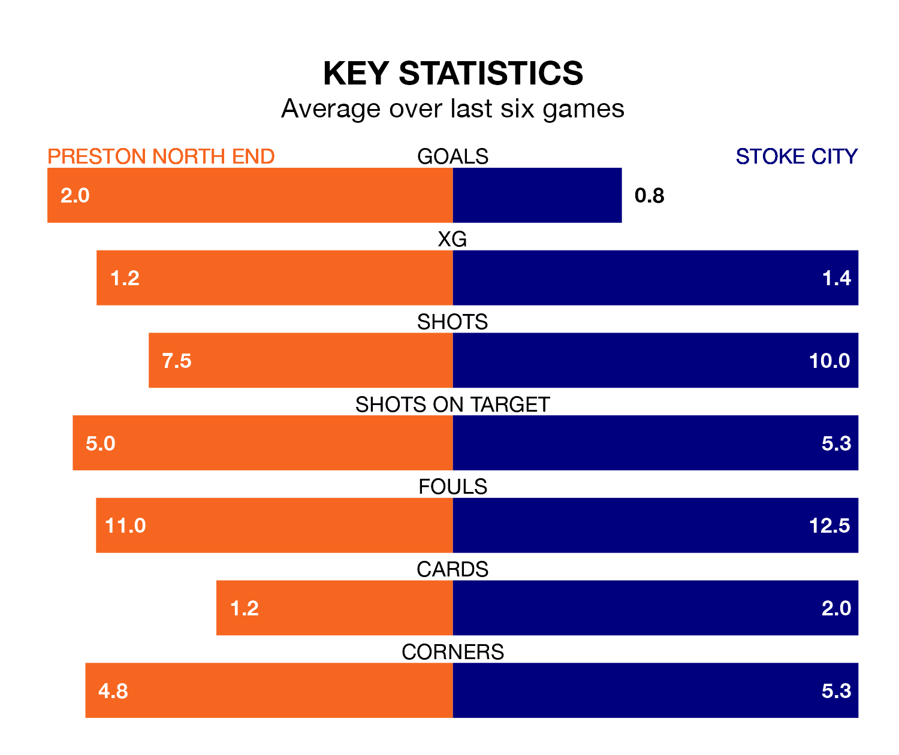

Preston North End face Stoke City on Saturday seeking to protect their long unbeaten run in the EFL Championship.
The Lilywhites are unbeaten in seven, with four wins and three draws, ahead of the 3pm kick-off.
They face a Stoke team who have won just two and lost five over the same number of games.
In the last 10 years, Preston and Stoke have played each other on 11 occasions. Preston won six of them, Stoke two, and they drew three times.
On average, the Lilywhites scored 1.4 goals and the Potters 0.7 in those matches.
Their last meeting was on September 2, when Preston won 2-0 away.
Stoke are 21st in the table after 36 games, of which they have won 10 and drawn eight, earning 38 points.
Preston are 12 places ahead of City in ninth, with 15 wins and eight draws putting them on 53 points.
With 33 goals in 36 games so far this season, the Potters are the league's third-lowest scorers with 0.9 goals per game. And they are conceding at an average rate, letting in 49 goals at a rate of 1.4 per game.
North End are also below average scorers, with 1.3 goals per game, compared to a league average of 1.4. They have conceded 1.5 goals per game.
In Will Keane, the Lilywhites have one of the league's sharpest shooters so far this season. He has notched 12 goals in 27 appearances, to sit sixth in the scoring charts.
His goal rate of one every 147 minutes is much quicker than that of André Vidigal, the away team's top scorer with a goal every 307 minutes, and a total of five goals in 25 games.
Preston's last match was on March 2, a 0-0 draw against Hull City.
Stoke lost 1-0 against Leeds United last time out, on Tuesday.
Saturday's match will be refereed by Joshua Smith, who has taken charge of 19 EFL Championship games so far this season, issuing three red cards and booking 72 players. He has awarded three penalties.
The last Preston game Smith refereed was a 2-1 home win against Leeds United on December 26. His last Stoke match was their 2-0 loss away at Ipswich Town on August 12.
Updated: 09:34 (UTC), 08/03/24